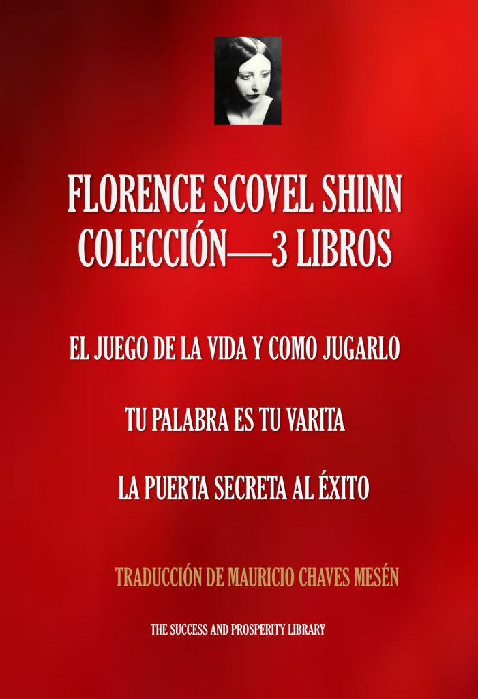

El Juego de la Vida y Cómo Jugarlo
Su obra más conocida: una guía sobre palabra, intuición, fe y prosperidad.
Ver en Amazon →Biblioteca de autora
Una voz singular del Nuevo Pensamiento, capaz de convertir las grandes leyes espirituales en consejos cercanos, memorables y profundamente prácticos.
Los tres clásicos reunidos en un volumen

Florence Scovel Shinn · ColecciónVer en Amazon →Su obra más conocida: una guía sobre palabra, intuición, fe y prosperidad.
Ver en Amazon →El poder creador del lenguaje y las afirmaciones aplicado a la vida diaria.
Ver en Amazon →Claves espirituales para superar los obstáculos y abrirse a nuevas posibilidades.
Ver en Amazon →